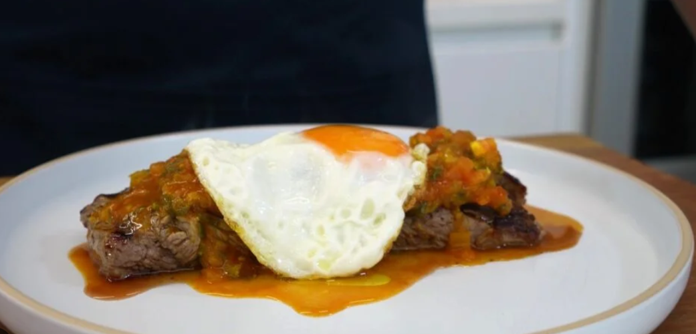

Si quieres un estilo de vida KETO esto te fascinara
Bistec a Caballo

Bistec a Caballo
Como datos curioso el bistec a caballo en Colombia es que su nombre no proviene de la carne utilizada, sino de la analogía de montar: los huevos fritos colocados encima simulan a los jinetes sobre un caballo. Es un clásico criollo, popularizado en los Andes como desayuno o almuerzo energético
La clave es que la yema del huevo esté líquida para crear una salsa cremosa al mezclarse con el bistec y el hogao.
Ingredientes
- 1 libra de carne
- 2 huevos
- Asador
- Sal
- 1 gajo de cebolla
- 2 tomates
- Aceite
Procedimiento
- Coloque a calentar el asador a fuego medio
- Una vez caliente coloque la carne a sellar por ambos lados
- Picar el tomate la cebolla y un ajo pequeño para hacer el hogao
- Ponga a freir los dos huevo, que la yema quede blanda
- Una vez todo cocinado, ponga la carne el Plato
- Encima coloque los huevos.
- y luego el hogao
Volver a Pagina Principal